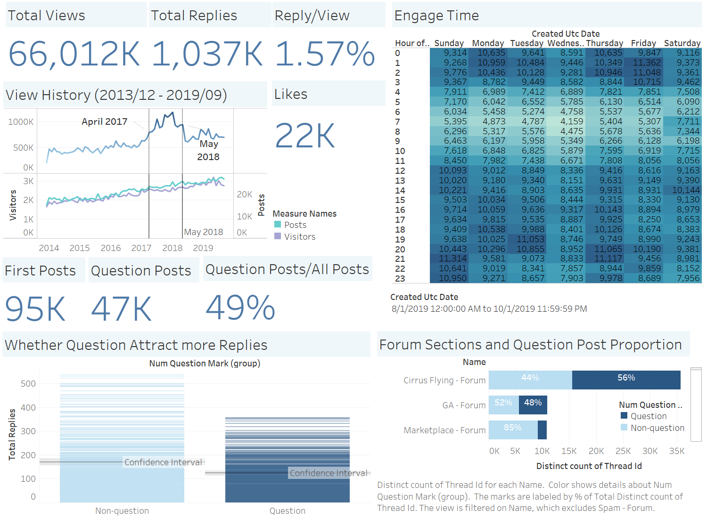

Website Engagement
How members engage in the website - data from the COPA database retrieved in Sep. 2019.
We explored the engagement of COPA members by analysis the page views and replies. For interest, we also analyzed whether posts with questions would generate more discussions.
In the database, the whole COPA forum posts were viewed by COPA members about 66M+ times. There are about 1M+ replies to those posts. On average, for every 100 times post views, people would reply about 1~2 posts. Compared to the replies, 'like' function was not very popular on the COPA website. Not many people used 'like' to evaluate the post, so there are only 22K 'likes' in total. Also, the 'like' function is not available before 2013, so most posts created before that that do not have 'like' now. Thus, in our model, although 'like' would be a good metric to measure the quality of the content, we did not use it at the end.
As we explored in the historical traffic session, between 2017 and 2018, COPA members seemed to view more posts than usual. During the same period, the number of visitors and the number of new posts were not increasing abnormally. One potential reason would be the event happened during that time, according to Gordon. To boost COPA members' engagement and construct a more active community, the COPA management team could hold similar events in the future.
When COPA members like to visit the website? Based on the data we have, from Aug. 2019 to Oct. 2019, most post view records were created from 12 PM to 3 AM. Wednesday is very special since the color (total views) is much lighter than others. Such analysis suggests that if the COPA management team wants to post some important announcements on the website and wants more reactions from COPA members, 6 PM to 12 AM would be a good time.
Whether posts with questions would attract more replies? Usually, we think people tend to answer others' questions, so posts with questions would have more replies. From the data, we found there is about 49% of posts contain questions (determined by the question mark - '?'). By adding the average line and confidence interval to the chart, we found that question posts have fewer replies than posts without question.
Reference/Mention
Regarding Google's PageRank algorithm, we also want to leverage the reference between posts to measure the quality of the post and use this metric in our search result re-ranking model. The dashboard shown below presents the most popular posts in forum, wiki, and blog that referred by others. Although this is a good metric, there are not many COPA members cite others' posts (the top forum post has been mentioned only 4 times). Also, except the wiki posts, mentioned by other posts does not mean the post would be viewed by others more. Thus, we also did not use this metric in our final model.